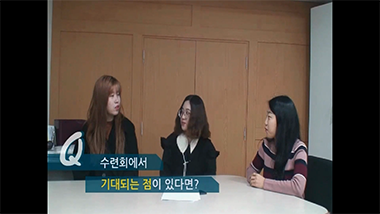

SCENARIO
-
훔쳐보는 MC
1청년부 수련회 회의가 있다는 소식을 듣고 (컨셉상) 유튜브를 운영하고 있는 웅튜브의 김영웅 MC가 수련회 기획팀 회의를 훔쳐보게 됨.
재미요소: 훔쳐보는 MC를 안쪽에서도 재촬영하여 마치 도둑처럼 보이게 촬영함.
-
MC 습격
훔쳐보기만 하던 MC가 유튜브 분량을 뽑기 위해 회의장을 습격하여 퇴짜를 맞게 되고 다시 들어가 인터뷰 재허가를 요청하여 승인을 얻어냄.
재미요소: MC가 퇴짜를 맞고 밖에서 수염을 그려 다른 사람인 것처럼 나타남.
-

인터뷰
Q&A 질문지를 미리 준비하여 수련회 홍보가 가능하도록 해준다. 자유롭게 토크 형식으로 말할 수 있도록 대화식으로 촬영함.
재미요소: 삼행시와 절묘한 영상 소스 사용